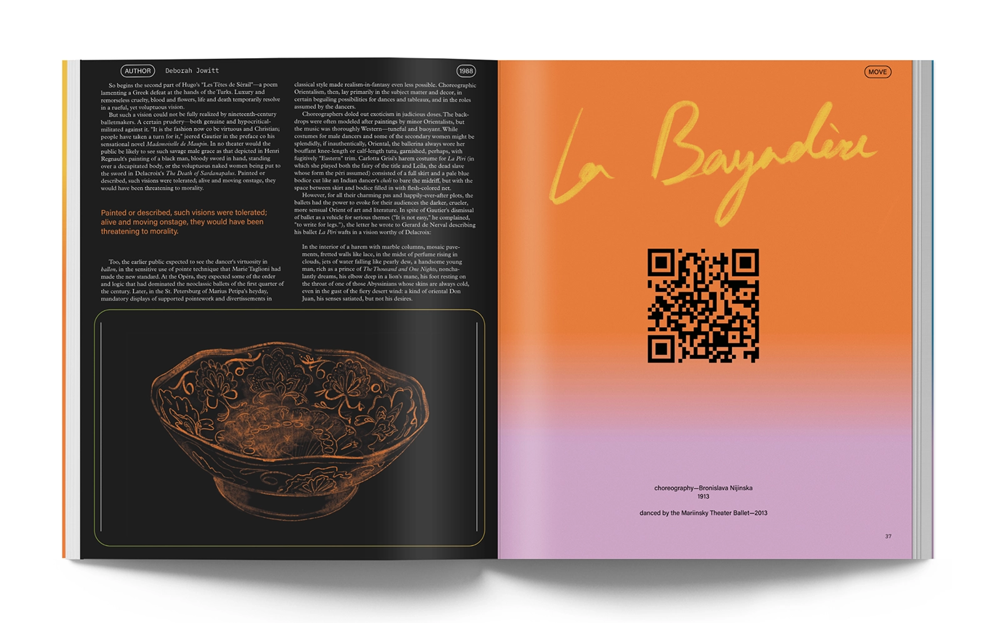

MOVE is a three-part magazine series, a historical zine that tells a history of injustices and prejudice in dance while also uplifting and celebrating dancers of all backgrounds. The first will take place from the 1800-1930s, the second from 1920s-2000s, and the third dealing with current politics and advocacy for other cultural dance forms that have been left out of theatrical dance in the West for years.
The visual language uses photography, illustration, and expressive typography. Each article in the zine intends to capture the essence of dance and memory as well as a shift in our perspective of history.
Project Info
2021 / Publication Design
10in x 11.5in
The visual language uses photography, illustration, and expressive typography. Each article in the zine intends to capture the essence of dance and memory as well as a shift in our perspective of history.
Project Info
2021 / Publication Design
10in x 11.5in
